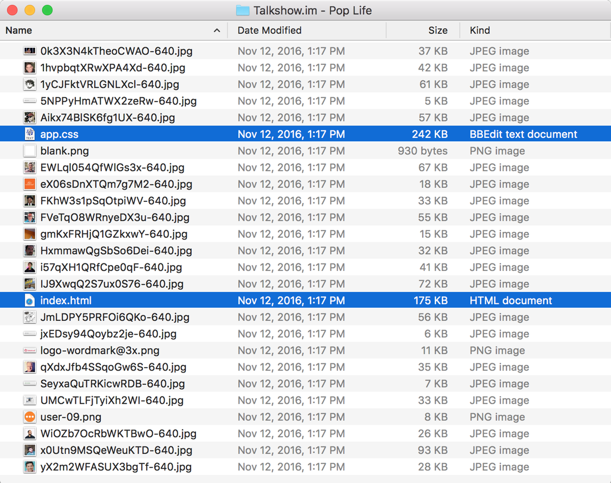

Working from home: tried to record a video yesterday, but the dogs were barking and the cat kept getting in the shot. Trying again today.
→ 2016/12/02 8:49 amI’ve been recording Timetable for about a year and I’ve never checked my MP3 download stats. Always best to ignore those as long as possible. Obsessing about numbers is a good way to doubt yourself and second-guess everything you produce.
→ 2016/12/01 6:04 pmThanks for using Searchpath
Today I sent the following email to everyone who has used my web app Searchpath. While I’m disappointed that I’ve neglected Searchpath, focusing everything on Micro.blog just makes the most sense right now.
Three years ago, I launched Searchpath to make it easy to embed a search box on any web site. Because you signed up to try it, either at the beginning or as a more recent paid subscriber, I wanted to thank you and let you know about the next steps for the service.
While I still love the idea behind Searchpath, I have not been able to give it the attention it deserves. Lately the service has been costing more to run than can be supported by subscription revenue. I’ve disabled new accounts and started migrating the data in an effort to keep the service running for active users.
Here’s what you need to know:
- If you had an active paid subscription, it has been cancelled and you won’t be billed again. The service will continue to run while you look for a new search solution.
- The current search index included many web sites that no longer use Searchpath. To save costs, I’ve reset the index. Active web sites using Searchpath will be automatically re-indexed.
I hope to return to Searchpath at some point in the future. For now, it will run in this limited mode for current customers. If you have any questions, please let me know via email at support@riverfold.com.
— Manton
P.S. One reason I can’t focus on Searchpath is I’m preparing to launch a new weblog service. It’s called Micro.blog.
We just posted Core Int episode 261. Good mix of business (make $$$$ with the Mac), tech (package managers debate), and plans (microblogs!).
→ 2016/12/01 12:28 pmRefocusing around Micro.blog
As I talked about on Timetable, now that I have the micro.blog domain I get to figure out what to do with it. And what I’m hearing from friends and listeners is clear: throw out my jumble of Snippets-related names and use Micro.blog as the brand for the platform. It’s obvious now.
Renaming a product before its official launch may not seem like a big deal, but in this case it gives the app a new importance. Just by renaming it, the app feels more ambitious. It forces me to devote more attention to it, which means saying goodbye to some of my other web apps that I can no longer focus on.
I have a difficult time shutting down failing products. Over the weekend, I took some much-needed steps to finish winding down Watermark and Searchpath. I’ll be sending an email this week to everyone who has used Searchpath with the details.
For Searchpath, I had procrastinated making a decision because even simple steps like closing new account registrations requires actually writing code and deploying changes. The index on my Elasticsearch server had grown to 90 GB, including Watermark as well. I needed a clean way to reset it and migrate the small number of active paid accounts somewhere else, to give customers time to find a new solution.
I’ve tried a few technologies for search over the years. The first version of Watermark used Sphinx, which I loved but became a scaling issue with its default need to completely reindex MySQL data. Eventually I moved to self-hosted Elasticsearch, but I had to keep feeding it RAM as the index grew. It was never stable enough with my limited skills.
As I noted in my post about Talkshow.im, there’s no perfect way to admit defeat and clean up the mess left by a web app. It’s always a balance of responsibilities — to your own business and to your customers.
But again, the way forward is clear. I should put everything into launching and growing my new microblog platform. It’s too much to maintain other web apps at the same time.
Excited about Trump’s claim of widespread voter fraud. Next: convince him we should vote again so he has another shot at the popular vote.
→ 2016/11/28 9:03 amAnything that annoys Trump, I’m in favor of. Protests? Yes. Recount? Yes. Electors confirming the national popular vote or abstaining? Yes.
→ 2016/11/27 8:42 amWe all really enjoyed Moana. I’ve been listening to the soundtrack this week, so it was nice to finally see how it all fits together.
→ 2016/11/26 5:58 pmTalkshow.im archives
Shutting down a web site correctly isn’t easy. When Talkshow announced they were closing, I was surprised. Six months is a limited time to launch, get traction, and then wind down. But I was glad that they’d let any show be exported as an archive.
The archives aren’t available for very long. If you hosted a show on Talkshow, you have until December 1st to download it.
I downloaded a couple to see how Talkshow handled it. Just in case no one else grabs them, I’m copying them here: Pop Life episode 5 with Anil Dash and guest John Gruber, and the Six Colors live coverage for Apple’s September 7th event. I had Instapaper-ed both of these to read later anyway.
The archive itself is a simple .zip file with HTML, CSS, and user profile images. In the Finder it looks like this:

This self-contained structure makes it very easy to re-share somewhere else. Credit to Talkshow for keeping this simple. But it also strikes me as so easy to keep hosting as static files, I wonder why Talkshow doesn’t keep the archives available indefinitely, which would preserve any existing links to these shows from the web.
This morning I posted a new episode of Timetable, about the .blog registration process and plans for my new domain. timetable.fm
→ 2016/11/25 8:34 amThanks to our Core Int listeners
Yesterday we published episode 260 of Core Intuition. From the show notes:
Daniel and Manton discuss Sal Soghoian’s sudden departure from Apple, and what it may mean for Apple’s future ambitions with automation. Then they react to Apple’s alleged decision to abandon their line of AirPort branded routers, and bemoan the loss of yet another “just buy the Apple one” peripheral option
I liked the topics for our show this week because it allowed us to not just talk about AppleScript as it exists today, but also to reflect on what life developing scriptable apps was like in the early days of AppleScript. It’s always fun to think back on 1990s Mac development.
Many of our listeners are celebrating Thanksgiving today. To all of our listeners, whether you’ve listened since the beginning in 2008 or just recently discovered the podcast, thank you so much for giving our show a chance and for being part of the community. Daniel and I still feel incredibly lucky that we get to chat every week about Apple news and our work as indie developers.
Walking around TCU
Frog Fountain.
I bought a new domain name: micro.blog. Big plans.
→ 2016/11/22 1:25 pmFake news and Instagram
Twitter has retweets. Facebook has sharing. But Instagram has no built-in reposting. On Instagram, there’s no instantaneous way to share someone else’s post to all of your followers.
The first version of Instagram was built by a very small team. They’ve always grown slowly and expanded the UI thoughtfully. I think the lack of a repost feature was deliberate.
When you have to put a little work into posting, you take it more seriously. I wonder if fake news would have spread so quickly on Facebook if it was a little more difficult to share an article before you’ve read more than the headline.
It’s not easy to build software that encourages good behavior. When I look at my Instagram timeline I see beautiful photos, hand-drawn art, and snapshots of everyday life. I see the very best of the world. It’s not the full truth, but it’s all true.
Instagram was no accident. The only question: was it unique to photos, or can the same quality be applied to microblogging?
Excited about .blog, but the rollout has been confusing. I definitely got 2 domains. Not quite sure about a 3rd which I dragged my feet on.
→ 2016/11/21 4:23 pmFixing AMP
When I first wrote about Accelerated Mobile Pages, there wasn’t a true implementation. Now we see how Google is rolling this out, and it has problems. John Gruber uses Ars Technica as an example:
On desktop browsers, these URLs do get redirected to Ars’s website. But on mobile they don’t. Share from one mobile device to another and nobody ever leaves google.com. Why would any website turn their entire mobile audience — a majority share of their total audience, for many sites today — over to Google?
Maybe this is inherent in how AMP works, and we should have predicted it. If Google’s AMP implementation must run in browsers, will there always be a layer of JavaScript and custom URLs that hide the original web site?
I’d prefer if Google added AMP support directly to Chrome. While it would be a much more limited rollout, it would feel more natural, with fewer drawbacks for publishers.
Competing news platform Apple News isn’t problem-free either. The apple.news:// shared links also add a redirect, with inconsistent behavior since not all platforms and countries even support Apple News. Apple News is an RSS reader that’s designed like a closed platform.
I want the web to be faster. Breaking links should not be part of the solution.
This weekend an Apple Store genius suggested that an iOS restore would fix our spontaneous iPhone 6S shutdown. I told him I doubted that would work and I immediately felt like a jerk afterwards. Of course the next day, Apple says there’s a real issue.
→ 2016/11/21 11:28 amIndie publishing is about control
Andy Baio redesigned his blog recently and argued that blogs still matter because of ownership and control. Of course, I agree. And though it may seem far off, there’s no guarantee that Twitter will outlast our own blogs. Andy writes:
Twitter, itself, may be acquired and changed in some terrible way. It’s not hard to imagine a post-Verizon Yahoo selling off Tumblr. Medium keeps pivoting, trying to find a successful revenue model. There’s no guarantee any of these platforms will be around in their current state in a year, let alone ten years from now.
Ben Brooks followed up:
Having my own site gives me complete control to do whatever I want, whenever I want, however I want. I don’t understand why people ever want it any other way.
Words are powerful. Especially right now, why let anyone else have control over the format of our words and how they spread? Having a blog is a statement: our writing exists apart from the whim of an algorithmic news feed.
New episode of my Timetable podcast is up, about why today’s blog post is both rant and mission statement, work, and the Moana soundtrack.
→ 2016/11/18 4:21 pmToday’s social networks are broken
Brent Simmons has left Twitter, frustrated with the diminishing value of the service, Twitter’s inability to deal with harassment, and more:
And then it was part of the system that helped elect a fascist President. This tipped it over for me: it’s no longer worth my participation. The shitheads can have it.
Facebook has also been in the news for its role in letting fake news spread. Ben Thompson has a long essay this week on it:
I get why top-down solutions are tempting: fake news and filter bubbles are in front of our face, and wouldn’t it be better if Facebook fixed them? The problem is the assumption that whoever wields that top-down power will just so happen to have the same views I do. What, though, if they don’t?
Maybe. Though while we should debate how to balance Facebook’s enormous power, there should be a parallel effort to move away from the centralized publishing model that gave Facebook that power.
Facebook has confused itself into thinking it is the whole internet, and so the principles of a free press that apply to the open web, also must apply to Facebook. No. While Facebook has a great responsibility to do the right thing, because they are so big, Facebook is just a web site.
I want Facebook to improve. I want Twitter to improve. But I can do very little to effect change at those companies, and some problems are so fundamental as to be essentially unfixable. The web wasn’t supposed to be like this, with all the power and all the writing concentrated into so few sites.
It’s time for a new social network that brings discoverability and community without the baggage of an ad-driven network that must grow to a billion users. A social network that embraces the open web, and freedom of expression, while preserving a clean timeline that can’t be interrupted by harassment.
Not just one new social network. I hope that many developers will work on products that encourage independent publishing again.
It’s going to take time to build. That’s why I started working on Snippets.today 2 years ago. I’ve made great progress, but I’ve also drifted, unfocused, uncommitted to finishing it, as if I knew something was missing.
Something was missing. The election results have made that clear. I was thinking big, but not big enough. The way forward must include both a decentralized publishing platform and the tools to encourage a safe community.
If you’d like to know when the beta is finally ready, please subscribe to the announce list. Thank you.